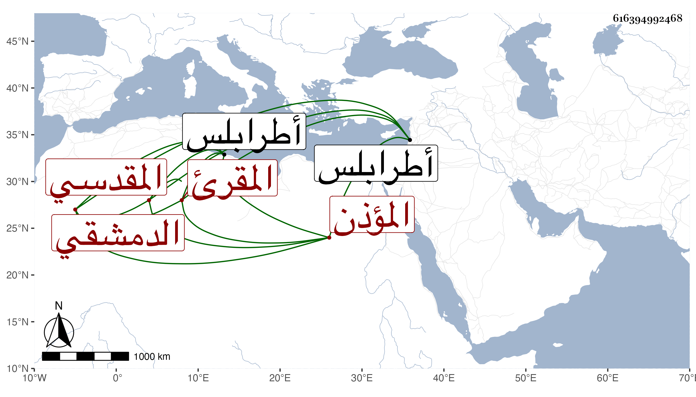

0902Sakhawi.DawLamic.ITO20230111-ara1.EIS1600.616394992468
Biography ID: 616394992468
284
محمد بن يوسف بن إبراهيم بن عبد الحميد المقدسي ثم الدمشقي المقرئ المؤذن . ولد سنة أربع وثلاثين وسبعمائة فيما قاله واقتصر عليه شيخنا في معجمه وقال في إنبائه أنه قبيل الخمسين وأسمع على زينب ابنة ابن الخباز وأخيهما محمد وغيرهما وحدث سمع منه شيخنا وقال في معجمه أنه كان مؤذنا بالجامع الأموي جهوري الصوت بالأذان مع كبر سنه . مات بطرابلس سنة ست وقيل في صفر سنة سبع وذكره في السنتين من إنبائه ، وتبعه المقريزي في الثانية في عقوده .
